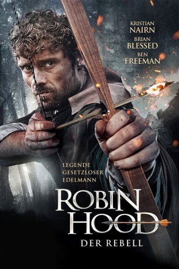

gesehen am 27.12.2018
gesehen am 27.12.2018Alternativ: Robin Hood: The Rebellion (Englischer Titel) gesehen am 27.12.2018
 
 IMDB-Wertung: 4.8 / 10
IMDB-Wertung: 4.8 / 10  Metascore:
Metascore: 
Der Sheriff von Nottingham hat seinen Erzfeind Robin Hood da getroffen, wo es ihm am meisten weg tut: Der fiese Herrscher entführte die große Liebes des berühmten Gesetzlosen, Maid Marian. Nun sitzt sie im Kerker – und Robin Hood will sie so schnell es geht wieder befreien. Er trommelt seine treuen Kumpanen zusammen, unter ihnen Little John und Friar Tuck, und macht sich gemeinsam mit ihnen auf den Weg. Jeder von Robins Männern wird alles geben, um dem Anführer der Rettungsmission zu helfen. Niemand wird nach Hause gehen, bevor Robin seine Marian wieder in die Arme schließen kann…
Jahr: 2018
Dauer: 92 Minuten
FSK: 12
Land: England Studio: Sunfilm EntertainmentTonspuren: DD5.1 - , - , - ,
Untertitel: Deutsch,
Auflösung: 1080p (1920x800) Größe: 9338 MB
Genre: Action, Abenteuer, Geschichte
Regisseur: Nicholas Winter
Drehbuch: Nicholas Winter
Soundtrack: Greg Harwood
Darsteller:
 Martyn Ford als Brimstone
Martyn Ford als Brimstone Brian Blessed als Friar Tuck
Brian Blessed als Friar TuckDatei: X:\2018(N-Z)\Robin Hood Der Rebell (2018, FSK12, 1920x800).mkv seit 18.12.2018
Festplatte: HD 2018(G-Z)-2019(A-Z)
 Es gibt insgesamt 172 Filme in der Gruppe '2018(N-Z)'
Es gibt insgesamt 172 Filme in der Gruppe '2018(N-Z)'